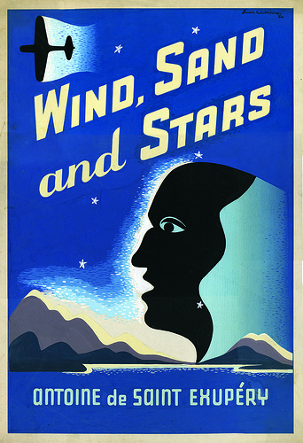
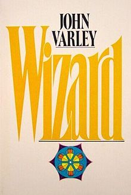
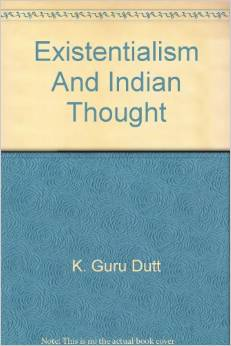
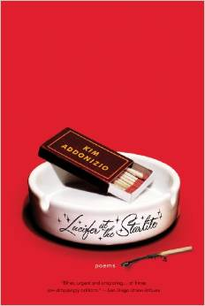
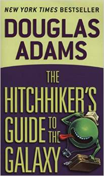
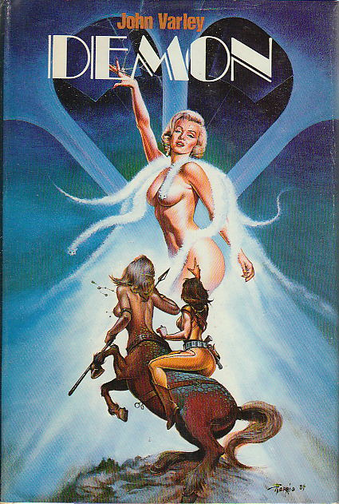

2014 Books
Housekeeping: Marilynne Robinson
Play It As It Lays: Joan Didion
Wind, Sand and Stars: Antoine De Saint Exupery

The Little Prince: Antoine De Saint Exupery
Cosmicomics: Italo Calvino
The First Bad Man: Miranda July
Memories, Dreams, Reflections: C. G. Jung
Wizard: John Varley

New Philosopher: Issue 5
The Shallows: Nicholas Carr
Mindfulness in Plain English: Bhante Gunaratana
The Willows: Algernon Blackwood
The Martian: Andy Weir
Existentialism and Indian Thought: K. Guru Dutt

Lucifer at the Starlite: Kim Addonizio

The Palace of Illusions: Kim Addonizio
Hitchhiker's Guide to the Galaxy: Douglas Adams

A Room of One's Own: Virginia Woolf
A General Theory of Love: Lewis, Amini, Lannon
At the Mountains of Madness: H P Lovecraft
Many Alarm Clocks: Sy Safransky
Brooklyn: Colm Toibin
To Kill a Mockingbird: Harper Lee
Walden Two: B.F. Skinner
This Bridge Called My Back: Moraga & Anzaldua
The Conquest of Happiness: Bertrand Russell
Red Mars: Kim Stanley Robinson
The Conquest of Bread: Peter Kropotkin
This Changes Everything: Naomi Klein
The Monkey Wrench Gang: Edward Abbey
Salt Sugar Fat: Michael Moss
New Philosopher: Health
Demon: John Varley

The Year of Magical Thinking: Joan Didion
© JKloor 2015 Books
Creative Writing